Настройка сети в Windows 7
Для подключения к интернет нужно настроить систему на автоматическую выдачу сетевых реквизитов. Обычно сетевая карта по умолчанию настроена на автоматическое получение сетевых реквизитов. Чтобы ваша операционная система автоматически получила настройки, нужно сделать следующее:
1. Зайдите в меню «Пуск» и выберите пункт «Панель управления».
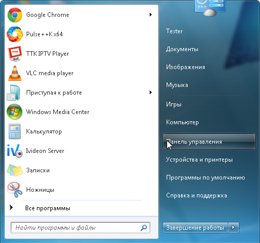
2. В подразделе «Сеть и Интернет» выберите пункт «Просмотр состояния сети и задач».
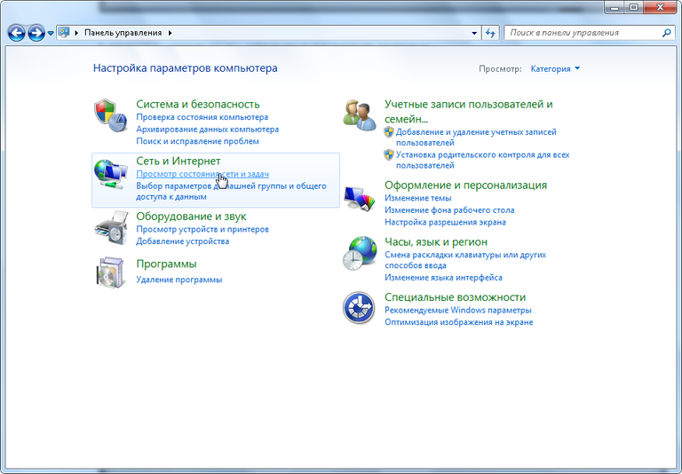
3. В левом меню нажмите ссылку «Изменение параметров адаптера».
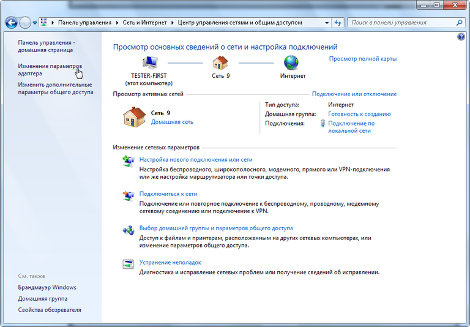
4. Выберите ваше «Подключение по локальной сети».
Если вы видите значок подключения по локальной сети, перечеркнутый красным крестом, или на нем нарисован восклицательный знак, или он отсутствует, то это означает, что соединение с сетью отсутствует или неправильно установлен сетевой адаптер. Обратитесь в службу технической поддержки.
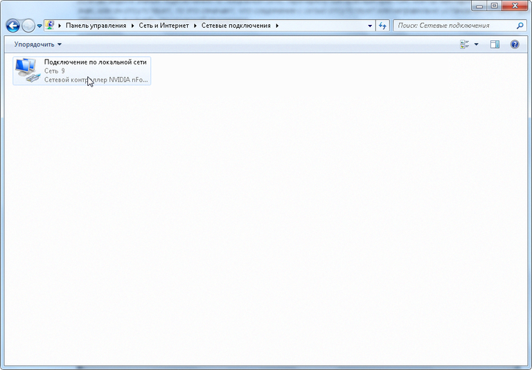
5. Шелкните на нем правой кнопкой мыши и в появившемся контекстном меню выберите «Свойства».
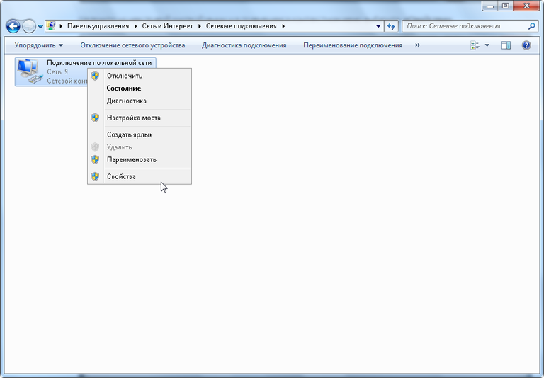
6. Поставьте галочку напротив пункта «Протокол Интернета версии 4», выделите его и нажмите «Свойства».
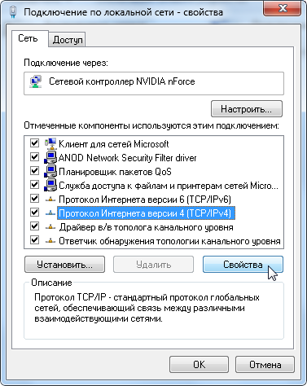
7. Выберите пункты «Получить IP-адрес автоматически» и «Получить адрес DNS-сервера автоматически» и нажмите «Ок».
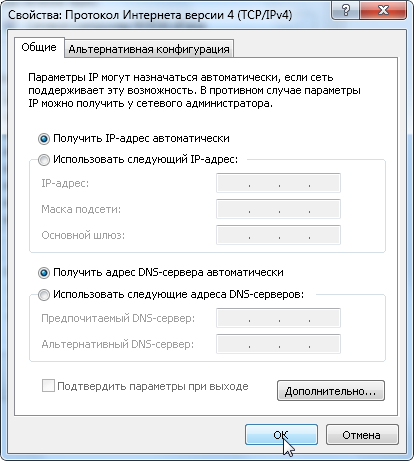
Настройка завершена!
Настройка сети в Windows 10
1. Открываем Пуск - Параметры
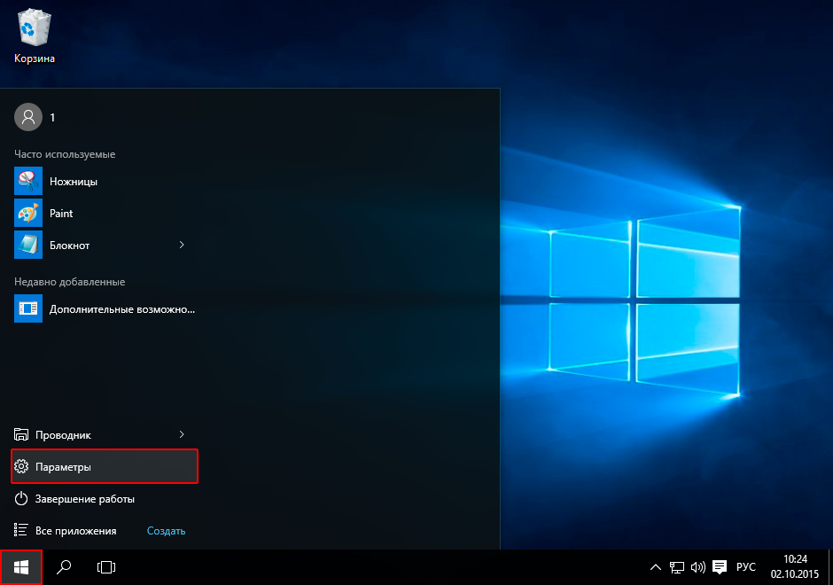
2. Выберите Сеть и Интернет
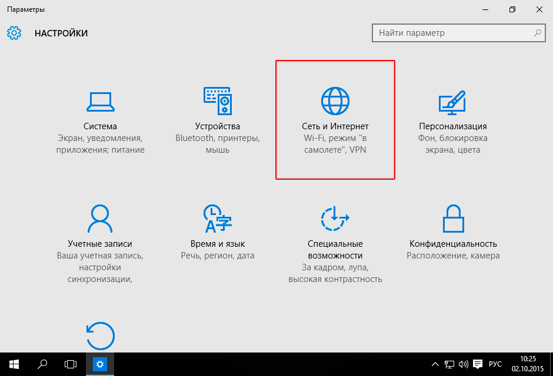
3. Нажмите слева Ethernet
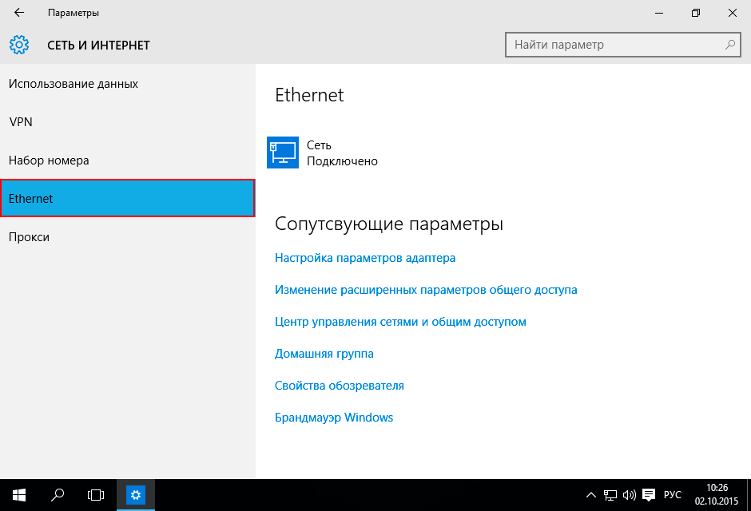
4. Выберите Ethernet далее Настройка параметров адаптера
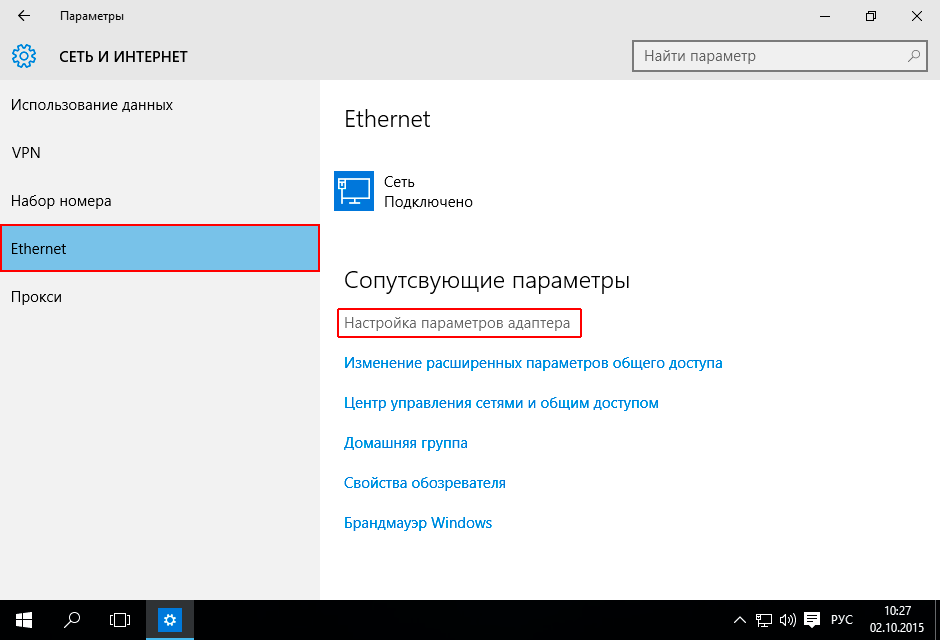
5. Щелкните правойк клавишей мыши по значку Ethernet
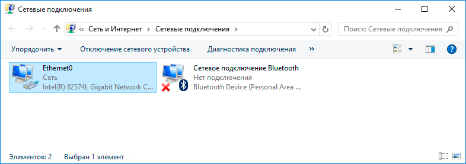
6. Выберите в появившемся меню пункт Свойства
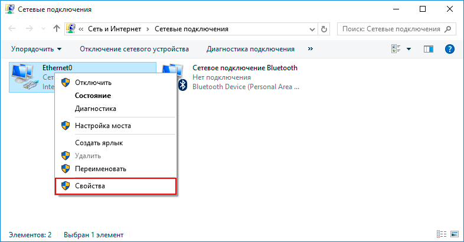
7. Выделите коммонент IP версии 4 (TCP/IPv4) и ниже нажмите кнопку Свойства
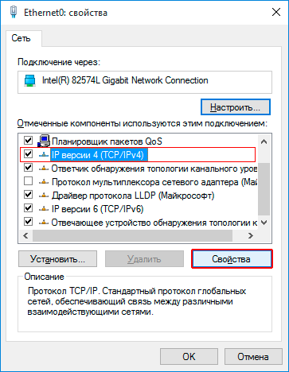
8. Отмечаем Получить IP-адрес автоматически. Также отмечаем Получить адреса DNS-сервера автоматически. Нажимаем кнопку OK
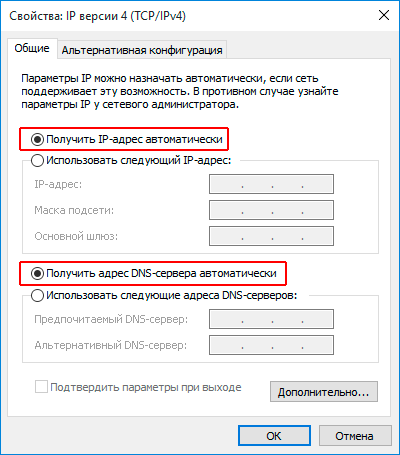
9. Нажимаем кнопку OK
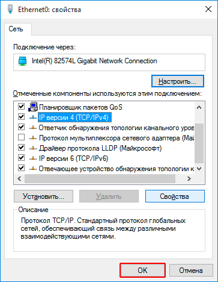